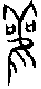
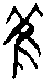
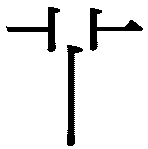
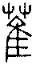
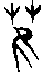
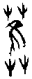

20 觀卦 風地觀
觀盥而不薦，有孚顒若。初六，童觀，小人无咎，君子吝。六二，闚觀，利女貞。六三，觀我生，進退。六四，觀國之光，利用賓于王。九五，觀我生，君子无咎。上九，觀其生，君子无咎。
【卦名】
今本：觀 帛書：觀 歸藏：觀 秦簡：灌 清華簡：觀 海昏：觀
《說文》：「觀，諦視也。從見，藿聲。」段注：「《穀梁傳》曰：常事曰視，非常曰觀。凡以我諦視物曰觀，使人得以諦視我亦曰觀。猶之以我見人，使人見我皆曰視。」「觀，多也，此亦引伸之義。物多而後可觀，故曰：觀，多也。猶灌木之爲藂木也。」
觀原義為仔細看、用心看的意思。但這具有雙向性：展示給人仔細看是「觀」，仔細看人展示也是「觀」。所以段注說：「凡以我諦視物曰觀，使人得以諦視我亦曰觀。」我們常講「觀摩」也是由此意思而來，意指仔細觀看並摩倣。觀也可當作樓臺，可能是祭祀之用，也可能是宣告政事之用，或者是讓人登高望遠之用。觀也可能指的是灌祭、灌禮。秦簡《歸藏》卦名就作「灌」。
甲骨文觀作（雚）或（雈），畫的是一種長有毛角的貓頭鷹，卝字頭在甲骨文中畫的是一對毛角，吅則像是貓頭鷹的一對大眼，另一說法認為雈為本字，加吅作為聲符。卜辭中則有做祭名用者，可能就是灌祭。另最常用者為假借為「風」（《甲骨文字集釋》），這與觀卦取象風在地上是相符的。此為《說文》見部：「觀，諦視也。」以及雈部：「鴟屬，从隹从，有毛角。所鳴，其民有旤。凡雈之屬皆从雈，讀若和。」這兩字的共同字源。
觀也有「多」的意思，所以物眾多之後就說是「可觀」。《序卦傳》：「有事而後可大，故受之以臨，臨者大也。物大然後可觀，故受之以觀。」段玉裁認為「觀」解釋為「多」是自「諦視」引申而來，但這引申得實在相當牽強。「觀」解釋為「多」比較可能是源自於《說文》艸部另一字源。萑：「，艸多皃，从艸隹聲。」此字在甲骨文中作或，上方的草字頭與雈上的形近而容易混淆。其草或作兩根、三根、四根不等，有時草也會寫作木，同樣也是二至四根不等。與在古文以及小篆中草與毛角的長相區別都相當清楚，但演變到楷書上面分別寫作艹和卝因此而更易混淆。至於是否在古文時就有形近而混淆的情況不得而知，或許又加聲符成就是要和區隔。
雖然《周易》中觀字同時兼具諦視（觀摩）、觀示與眾多（可觀）兩義，但是經文中應當以諦視，或者觀示來解釋。
【卦義】
觀摩學習、萬民觀仰，神道設教（觀示）。
就如「觀」的字義有兩面性：展示讓人用心觀看是觀，用心觀看展示也是觀。觀卦也有兩面性，而這個兩面性則是用古代的「灌」禮來體現，觀卦典故即源自於灌禮。
灌與觀同樣源自於雚字，觀亦假作灌。灌通盥、祼（音貫）。卦辭：「觀，盥而不薦，有孚顒若。」王弼注引孔子曰：「禘自既灌而往者，吾不欲觀之矣。」灌禮是禘祭中在獻牲之前，以加了香料的酒澆到地面以求神降臨。這是因為周人重視氣味，認為香氣可以請神。《禮記．郊特牲》：「周人尚臭，灌用鬯臭，鬱合鬯，臭陰達於淵泉。灌以圭璋，用玉氣也。既灌，然後迎牲，致陰氣也。」這裡的臭就是味道，《說卦》「巽為臭」，觀卦巽上坤下，巽為臭，為鬯臭澆於地也就是灌祭之象。
馬融：「國之大事，唯祀與戎。王道可觀，在於祭祀。祭祀之盛，莫過初盥降神。」古代國家大事不外乎祭祀和戰爭，而這兩項最可向百姓展示者就屬祭祀。古代聖王透過灌禮來展示王道，達到風行草偃的教化功效。這是以宗教上的祭祀來感化人心，也就是《彖傳》所謂的「神道設教」，這也是就君王的觀示而言。
臨卦陽爻在下，為君長監臨百姓；觀卦則是君長在廟堂之上，百姓仰觀。
觀又有施行命令之義。上為風，下為地，風行地上，巽為命，坤為眾為邦，為向眾人、向邦國發號命令之象。
木為地上最為可觀者，木在地上即為觀之象。《說文》目部：「相，从目从木。《易》曰：地可觀者，莫可觀於木。」《漢書．五行志》：「木，東方也。於易，地上之木為觀。其於王事，威儀容貌亦可觀者也。」
《序卦》：「蠱者事也。有事而後可大，故受之以臨，臨者大也。物大然後可觀，故受之以觀。」卦序上觀卦與臨卦為相綜的對卦，是繼有事（蠱）之後而來，為君子整飭蠱事，勵精圖治的時候，一是嚴格監臨，也就是臨卦；另一是令行天下，教化群眾，也就是觀卦。
王弼曰：「觀之為義，以所見為美者也，故以近尊為尚，遠之為吝。」觀卦告戒君子當多觀摩學習，多看少做。能夠自我反省，薰陶日久，自然可以水到渠成。而觀摩的吉道，在於能夠接近權力，誠心而莊重，有如觀看國家大典，越是離君王位置近的，越能對全貌觀看清楚，而越是用心觀看越能看出門道。因此卦爻的判斷上，以九五為君，觀示天下，亦為群眾仰觀之中心，與九五接近而能見其美者為吉。六四因最近九五之君，又能順承九五，因此說「觀國之光」，為全卦最吉者。而初六之為童觀，與六二之為窺觀，則因遠離九五。
觀盥而不薦，有孚顒若。
- 彖曰：大觀在上，順而巽，中正以觀天下。觀盥而不薦，有孚顒若，下觀而化也。觀天之神道，而四時不忒，聖人以神道設教，而天下服矣。
- 象曰：風行地上，觀，先王以省方，觀民設教。
- 序卦：臨者大也。物大然後可觀，故受之以觀。可觀而後有所合，故受之以噬嗑。
- 雜卦：臨觀之義，或與或求。
【今解】
觀看祭典，就要看澆灌香酒請神最隆重的一段，這時與祭者最為虔誠而莊嚴。
至於後面奉獻牲禮開始就沒什麼好看的。此比喻觀禮要虔誠與用心。
【字義】
觀盥而不薦：觀看宗廟之禮主要是看前半段灌禮時的莊敬、虔誠，不是後段薦禮時的隨便散亂。盥或作灌、祼。灌與薦是君王祭天的兩個過程，灌禮在前，以香酒澆灌地面以請神，此時隆重而精神專一，眾人態度虔誠而莊敬，這也是整個典禮最為可觀的精華時段。待請神之後，神明降臨，則開始以牲禮敬獻，為薦禮，這時眾人已散亂而無秩序，態度隨便而不專一虔誠。所以《論語．八佾》孔子說：「禘自既灌而往者，吾不欲觀之矣。」朱熹：「灌者，方祭之始，用鬱鬯之酒灌地，以降神也。魯之君臣，當此之時，誠意未散，猶有可觀，自此以後，則浸以懈怠而無足觀矣。蓋魯祭非禮，孔子本不欲觀，至此而失禮之中又失禮焉，故發此歎也。」馬融：「盥者，進爵灌地，以降神也。此是祭祀盛時，及神降薦牲，其禮簡略，不足觀也。國之大事，唯祀與戎。王道可觀，在於祭祀。祭祀之盛，莫過初盥降神。故孔子曰：禘自既灌而往者，吾不欲觀之矣。此言及薦簡略，則不足觀也。」王弼：「王道之可觀者，莫盛乎宗廟。宗廟之可觀者，莫盛於盥也。至薦，簡略不足復觀，故觀盥而不觀薦也。孔子曰：禘自既灌而往者，吾不欲觀之矣。盡夫觀盛，則下觀而化矣。故觀至盥則有孚顒若也。」朱熹認為，盥是指灌禮前的洗手，還未澆灌香酒。《本義》：「盥，將祭而潔手也。」《朱子語類》：「盥只是浣手，不是灌鬯。伊川承先儒之誤。若云薦羞之後，誠意懈怠，則先王祭祀，只是灌鬯之初，猶有誠意，及薦羞之後，皆不成禮矣。」
有孚顒若：很虔誠而莊敬的樣子。孚，信實，這裡形容虔誠。顒，音ㄩㄥˊ，原意為大頭，頭很大的樣子。引申形容莊敬、虔誠的樣子。但顒若有兩種相反的解釋，一是形容君王在上，威儀莊重，受萬民景仰。宋明以前多作如此解釋，如虞翻：「顒顒，君德，有威容貌。…巽爲進退，容止可觀，進退可度，則下觀其德而順其化。上之三，五在坎中，故有孚顒若，下觀而化。《詩》曰：顒顒卬卬，如珪如璋，君德之義也。」朱熹：「顒然，尊敬之貌。言致其潔清而不輕自用，則其孚信在中，而顒然可仰。」二是形容百姓瞻仰虔誠的樣子，例如程頤：「天下之人莫不盡孚誠，顒然若瞻仰之矣。顒，仰望也。」朱熹：「或曰：有孚顒若謂在下之人信而仰之也。」
先王以省方，觀民設教：先王藉以考察地方，觀察民情而據以設立教化。鄭眾：「從俗所為，順民之教，故君子治人不求變俗。」《九家易》：「天地氣絕，陰陽所去，象不化之民，五刑所加，故以省察四方，觀視民俗，而設其教也。言先王德化，光被四表，有不賓之民，不從法令，以五刑加之，以齊德教也。」
初六，童觀，小人无咎，君子吝。
象曰：初六童觀，小人道也。
【今解】
童僕或兒童的觀點，小人沒有罪咎，君子就很可鄙。
言初六之觀禮有如僕童或兒童，所觀膚淺、淺薄，從頭到尾不知道祭典在做什麼。小人如此無可厚非，故曰無咎。君子如此則不識大體，可鄙而有吝，吝者言其小疵而趨近於凶。
初六距離九五最遠，與上體又無繫應，無法觀祭的一爻，此有如小孩或童僕之觀看祭典一樣，完全是「外行人看熱鬧」，不知在看什麼。對小老百姓、小人來說，這原本就沒什麼罪咎可言，反正就是去湊熱鬧。但是對於那些高官、君子而言，觀看祭典卻遠離現場而不能進入狀況，則是很可鄙的事。
【字義】
童觀：童僕或兒童觀看祭典，形容觀看者愚昧而淺薄，不受感化。這種愚昧，於小老百姓是無可厚非的，但對於君子來說就是不識大體。童原指為奴之罪人。《說文》：「男有罪曰奴，奴曰童，女曰妾。」古代有罪而為奴隸者男曰童，女曰妾，此為童僕、僕人之由來。後世亦以童為童稚、小孩之稱。鄭康成：「童稚也。」馬融：「童猶獨也。」獨言童子獨身，尚未有家室。童亦假為僮，《說文》：「僮，未冠也。」即童稚的意思。
六二，闚觀，利女貞。
象曰：闚觀女貞，亦可醜也。
【今解】
從門縫看祭典，只適於女子的貞靜。
從門縫窺探祭典，所看非常偏狹而不完整。對女性而言，這樣的行為與胸襟無傷大雅，因此說有利於守貞守靜的女性。但此亦告戒君子，行為與心胸不當有如三姑六婆以窺探他人私事為業，應當志在四方，放眼外面的大世界，注重大的問題與事情。或者隱喻，君子看事不當以管窺天。
【字義】
闚觀：原意為從門內闚視。只從門縫看外面的世界，言所看的事非常偏狹。也可指在祭典上觀禮時，如女子只能在後方從人縫中窺探祭典的零碎樣貌。《說文》：「闚，閃也。」「閃，闚頭門中也。从人在門中。」闚為頭在門中，即透過門縫看東西，豐卦上六「闚其戶」。闚或解釋為小視，此借作窺。段玉裁闚字注：「此與窺義別，窺，小視也。」
利女貞：「窺觀」只適於女子之貞靜。女子、小人為吉，男子、君子為凶。此君子、小人是以有官位無官位區分。
六三，觀我生，進退。
象曰：觀我生進退，未失道也。
【今解】
開始觀看自己的行為，面臨進退的決定。
對於祭典既無法像小老百姓一樣漠不關心，又無法像國賓一樣直接參與，居於進與不進，退與不退的決定之間。
三已較初、二更近九五之君，又與上九相應，因此是可參與祭典者。但所應的上九並非主祭的君王，再加上六三以陰居陽不當位，代表身份參與祭典並不洽當。三又是多凶之位，上有互體艮山止於前，所以前往觀看有許多難處。因此有進退之象，只能視自己的情況而決定是否參與祭典。
【字義】
觀我生：觀察我自己的行為。觀我，觀察自我，即觀察自我的情況。對於是否參與祭典，就要看自己。生有各種不同的解釋，朱熹以生為「行為」：「我生，我之所行也。六三，居下之上，可進可退，故不觀九五，而獨觀己所行之通塞以為進退。占者宜自審也。」京房注上九「觀其生」：「言大臣之義，當觀賢人，知其性行。」這是以生為品性和行為，看法與朱熹相近。朱震認為生為動，動之所自出。虞翻認為是生民：「生，謂坤生民也。」「觀我生進退」指君王觀看生民百姓的進退。或指展示祭典之進退給百姓看。高亨認為生應為姓，官的意思。觀我生進退，即觀我國官員之進退。上九觀其生，即觀他國官員之行禮。另外，灌禮中有迎牲之禮，生或者為牲，觀我生指觀我之牲禮。
進退：不果貌。
六四，觀國之光，利用賓于王。
象曰：觀國之光，尚賓也。
【今解】
觀看國家之光，受邀成大王的貴賓。
直接參與盛會的觀眾，也是祭典的上賓，所以可以目睹一切的慶典盛事。利於去拜訪別人的國家，將被視為上賓。
觀卦中能夠觀看祭典最清楚，位置最好的，就是六四一爻。因四為近君之位，就在國君旁邊，六四又承九五之君，因此為國家貴賓。所觀看者最近而最詳。
【筮例】
《左傳》莊公二十二年記載陳厲公為他兒子陳完問卦的故事，這一卦準確預測了十世之後姜齊將被田氏所取代。
陳國屬媯姓（媯音歸），陳國公子完（陳完）諡敬仲，因國內政爭而逃亡到齊國之後以「陳」改為田氏，因此又稱田完、田敬仲，他也正是「田齊」的始祖。
陳完剛出生時，他父親陳厲公（佗）遇到周史來見，於是請周史以《周易》筮了一卦，得到觀之否，也就是觀卦六四。周史說：
是謂『觀國之光，利用賓于王』，此其代陳有國乎？不在此，其在異國。非此其身，在其子孫，光遠而自他有耀者也。坤土也，巽風也，乾天也，風為天於土上，山也。有山之材，而照之以天光，於是乎居土上，故曰『觀國之光，利用賓于王』。庭實旅百，奉之以玉帛，天地之美具焉，故曰『利用賓于王』。猶有觀焉，故曰其在後乎。風行而著於土，故曰其在異國乎。若在異國，必姜姓也。姜，大嶽之後也。山嶽則配天，物莫能兩大。陳衰，此其昌乎。
意思大概是説，陳完（陳敬仲）將替代陳國而擁有國家嗎？不會在陳國當上一國之君，而是在他國；也不會在他這一世，而是在其後世子孫。而且會是在陳國衰敗之後於姜姓之國（齊國）崛起。
陳完逃到齊國後改為「田」氏，並受齊桓公欣賞而任「工正」一職，主掌百工。齊國懿氏想把女兒嫁給陳完時為此而占卜，結果大吉，曰：
鳳皇于飛，和鳴鏘鏘；有媯之後，將育于姜。五世其昌，並于正卿。八世之後，莫之與京。
其後世子孫在齊國逐漸興旺，在這同時陳國亡國。
田氏在齊國經過幾個世代的經營之後，至田太公（田和）時，相齊宣公，宣公死後，子康公立。康公由於淫於酒色，不聽朝政，遭田太公放逐並軟禁在海上。田和自立為國君並得周天子答應，將田和立為齊侯，列於周室，西元前386年田氏正式取代姜姓在齊國的政權，史稱「田齊」。
太史公讚歎這個筮例說：「蓋孔子晚而喜易。易之為術，幽明遠矣，非通人達才孰能注意焉！故周太史之卦田敬仲完，占至十世之後。」
九五，觀我生，君子无咎。
象曰：觀我生，觀民也。
【今解】
自我觀察，自我反省，君子因此可免於罪咎。
九五是舉辦慶典的主人，也是大家所觀摩的對象，但是另一方面也在自我觀看。此言君子當反身自省，則可免罪咎。三與五同功，故皆曰觀我生。
【字義】
觀我生：觀看自己的行為。六三與九五都說「觀我生」，但兩者大不相同。六三是參不參與祭典都很尷尬，所以就自己看自己的情況，衡量是否參與，說「進退」。九五的看自己，是因為九五是祭典的主人，所以本身就是被觀看的對象，因此對於祭典，等於是在看自己的演出。因此也有自己反身自省的意謂。觀通解為觀察的觀，但或可解釋為觀示、展示的觀，讀作「灌」。觀我生，展示我之性行，即君王展示王道，此有如比卦之「顯比」。
上九，觀其生，君子无咎。
象曰：觀其生，志未平也。
【今解】
觀看他人的行為，君子沒有罪咎。
上九雖然高而無位，但也是高高在上。此言上九觀九五之行為。
傳統以觀我生為君王之自觀，觀其生為君子或君王為民所觀。如王弼：「觀我生，自觀其道者也。觀其生，為民所觀者也。不在於位，最處上極，高尚其志，為天下所觀者也。處天下所觀之地，可不慎乎？故君子德見，乃得无咎。」程頤：「上九以陽剛之德處於上，為下之所觀，而不當位，是賢人君子不在於位，而道德為天下所觀仰者也。」
《漢書．五行志》引《京房易傳》：「經稱『觀其生』，言大臣之義，當觀賢人，知其性行，推而貢之，否則為聞善不與，茲謂不知，厥異黃，厥咎聾，厥災不嗣。黃者，日上黃光不散如火然，有黃濁氣四塞天下。蔽賢絕道，故災異至絕世也。」
【彖傳注】
大觀在上，順而巽，中正以觀天下。觀盥而不薦，有孚顒若，下觀而化也。觀天之神道，而四時不忒，聖人以神道設教，而天下服矣。
大觀在上：九五主爻為大觀在上。觀有二義，一是諦視，仔細看，觀摩之義，讀做官。二是展示，示於人，朱熹所說的「有以示人而為人所仰也」，讀作灌。「大觀」在上應該是採第二義，乃上位者有以示人，在上而為人所觀仰。《爾雅·釋宮》：「觀謂之闕。」觀卦六畫大象像一艮，大型之門闕，為觀臺樓闕之象。
順而巽：以上下二體卦德解釋觀，下卦坤為順，上為巽，順而巽之象。
中正以觀天下：以九五主爻解釋觀卦，擴大引申大觀在上之義。九五處中而當位，具中正之德。下卦坤為邦國為眾人，九五大觀在上，有觀天下之象。觀讀作官或灌都可通。讀作官，為觀視，以中正之德而觀示天下。讀作灌，為觀示，以中正之德展現王道於天下。
觀盥而不薦，有孚顒若，下觀而化也：解釋觀卦經文「觀盥而不薦，有孚顒若」。下觀而化，下四陰承九五之陽。此觀為諦視之義，音官。在下者諦視盥禮，虔誠而受教化。
按：觀卦為十二消息卦之一，從陰陽消息觀點來看，否卦九四陽退陰長成觀，因此觀卦主爻當為六四。觀卦也可能是四陰二陽之卦卦變的開始。然而《彖傳》並未以消息卦來決定觀卦主爻，否則當以六四為主爻才是。與觀卦旁通的大壯也是同樣的狀況。至於觀與大壯，《彖傳》為何不以消息卦來注解？這是值得探索的問題。而這兩卦如果不是消息而來，還有什麼方式？
“注重大的問題與事情”應為“關注”。
“注重大的問題與事情”應為“關注”。